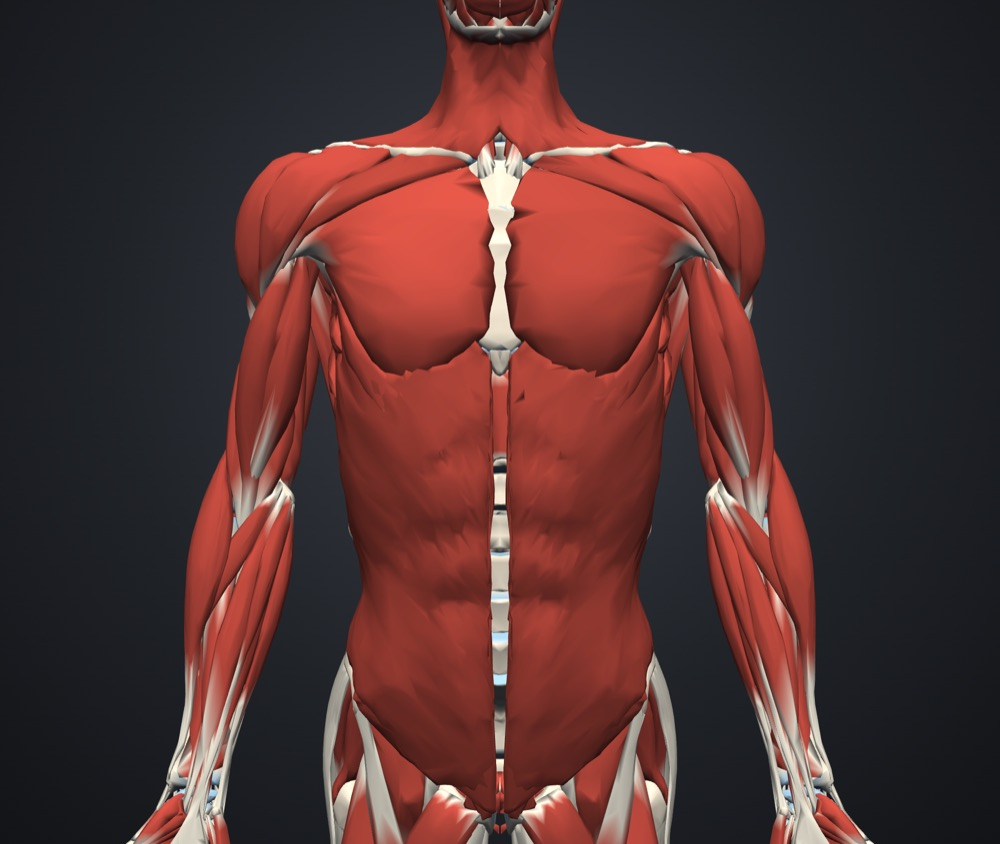
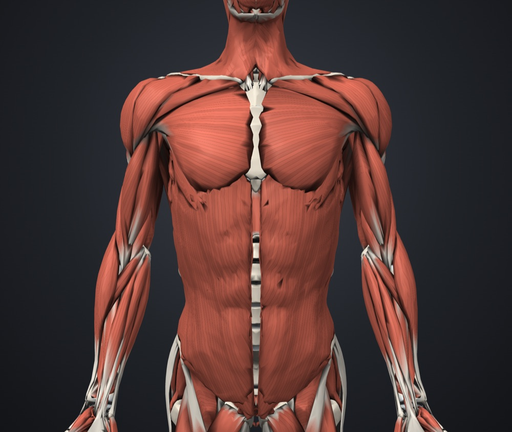
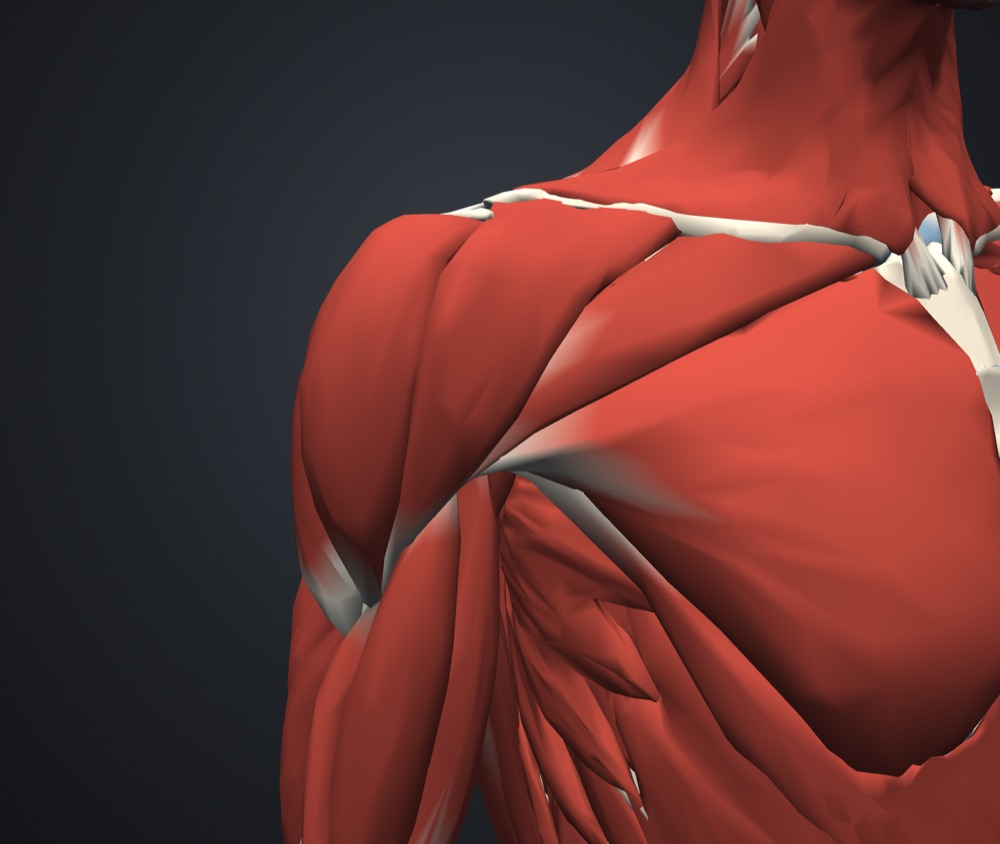
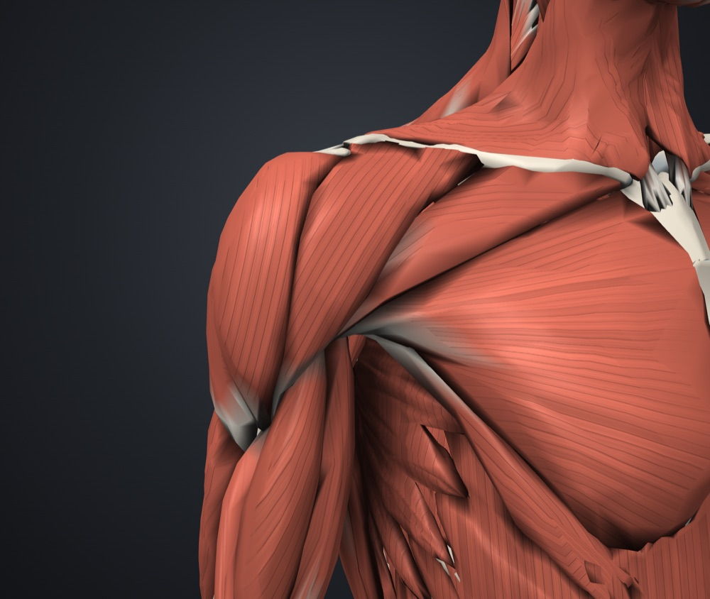
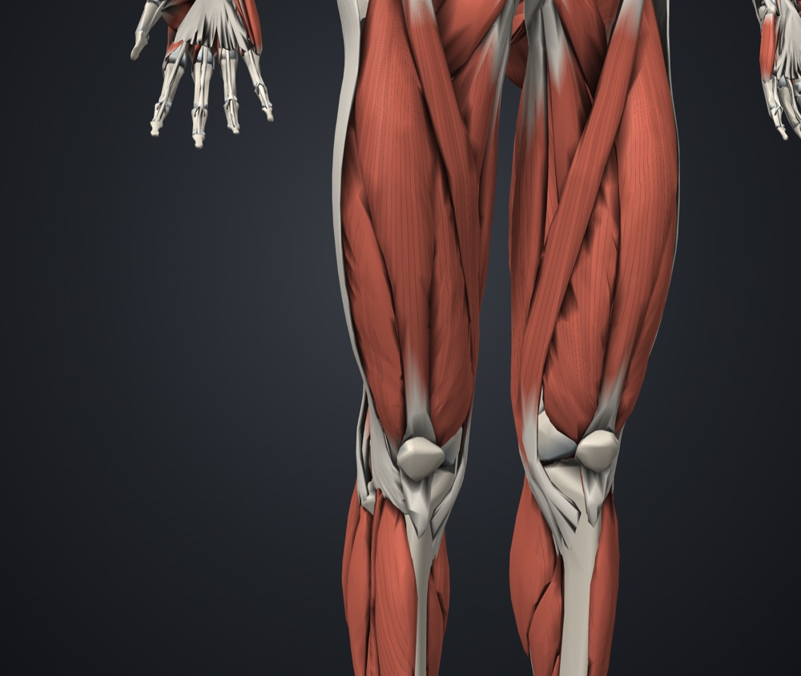
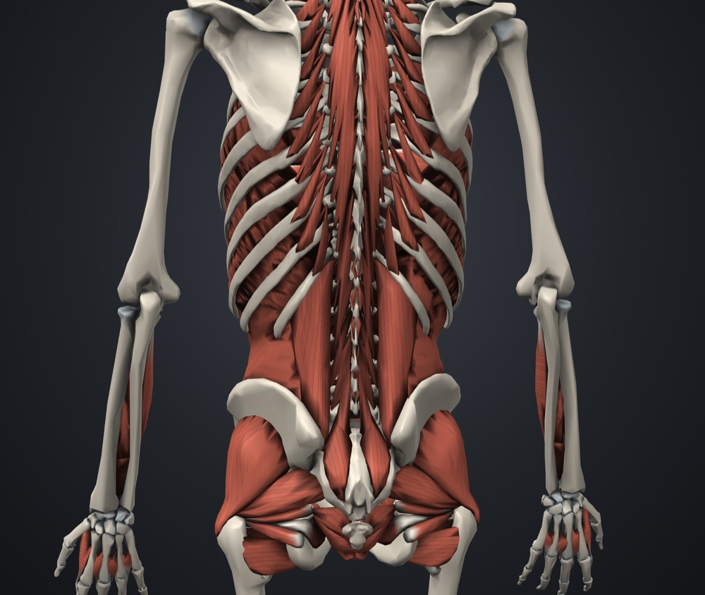
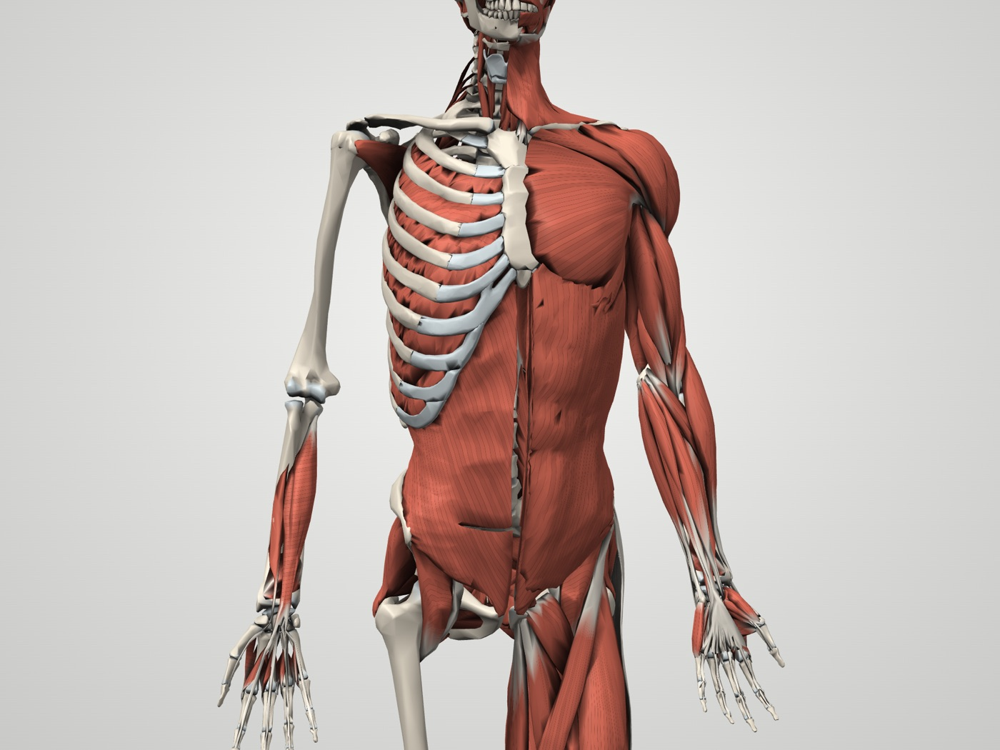

Une application plus réaliste, plus simple à manier
Ce plan reprend vos remarques : l’esthétique, le déplacement à deux doigts, la page qui saute sur l’iPad, et la disposition de l’application de référence. Les images du nouveau rendu ci-dessous sont de vrais rendus faits avec nos modèles, pas des illustrations.
Ce que j’attends de vous
Votre accord, ou vos corrections, sur la disposition et les gestes proposés.
Fond sombre ou fond clair (comparaison plus bas).
Si je corrige tout de suite les deux défauts de manipulation, avant le reste.
Les trois problèmes et leur correction
Sur l’iPad
La page saute à chaque toucher
Cause probable : pour rester fluide, l’image baisse de résolution dès qu’un doigt se pose, puis remonte quand il se lève. Sur l’iPad, ce double changement fait sauter l’affichage.
Correction : résolution fixe et page entièrement bloquée (plus de rebond ni de défilement). La fluidité sera gagnée autrement, par les modèles par région.
Manipulation
Déplacer avec deux doigts
Le déplacement à deux doigts existe, mais il est perturbé par le saut d’image et par mon zoom ajouté récemment.
Correction : deux doigts font tout en même temps, comme dans l’application de référence : glisser pour déplacer, pincer pour zoomer vers les doigts, tourner pour pivoter.
Apparence
Rendu trop « plastique »
Couleurs uniformes, éclairage plat, aucun relief dans les creux : le corps ressemble à un modèle en plastique.
Correction : nouveau rendu inspiré de l’application de référence, détaillé juste en dessous.
Le nouveau rendu
L’application de référence montre des muscles saumon striés de fibres, des tendons blanc nacré, des os gris clair mats et une lumière de studio photo qui creuse les reliefs. J’ai reproduit ces trois ingrédients avec nos modèles :
Lumière de studioUne lumière principale, une lumière d’appoint et un reflet doux, précalculés pour ne pas ralentir l’iPad.
Fibres musculairesFines fibres groupées en faisceaux, dans la vraie direction de chaque muscle : en éventail pour le grand pectoral, le trapèze ou le deltoïde, parallèles pour le biceps ou le droit de l’abdomen.
Ombres de contactLes creux entre muscles et os s’assombrissent, ce qui donne la profondeur. Calcul fait une fois pour toutes, à la préparation.

Aujourd’hui · torse de face

Proposé · même vue, nouveau rendu

Aujourd’hui · épaule droite

Proposé · fibres du deltoïde et du grand pectoral

Proposé · cuisses : sartorius, quadriceps et adducteurs, chacun avec sa direction de fibres

Proposé · dos en plan profond : érecteurs du rachis, intercostaux, os du bassin
Version 2 du rendu, après votre remarque du 27 novembre : les ondulations venaient de ma première méthode, qui découpait les fibres en tranches à travers tout le corps. Les fibres sont maintenant calculées muscle par muscle, à partir de leurs zones d’attache sur les os. Le rendu s’approche de la référence sans l’égaler : ses modèles sont sculptés et peints à la main par l’éditeur et lui appartiennent ; les nôtres sont des modèles libres, sans peinture. Quelques petits muscles du cou et de la face restent lisses, faute de données d’attache fiables. La vraie limite viendra de l’iPad mini 2 : c’est pourquoi je propose des modèles par région, plus détaillés et plus légers à la fois.
La nouvelle disposition
L’écran est dégagé : le corps occupe tout l’espace, les commandes flottent par-dessus, en verre fumé. Exemple ci-dessous avec le tronc, côté droit épluché jusqu’au plan profond.
Barre du hautRetour à l’accueil, nom de la région affichée, recherche, signets (vues enregistrées) et réglages.
2
Étiquette accrochéeLe nom suit la structure touchée, avec le latin dessous et les actions à portée de doigt.
3
Règle des couchesToutes les couches au même endroit, de la peau à l’os. Expliquée plus bas.
4
Choix du côtéÉplucher un seul côté pour comparer superficiel et profond, comme sur l’image.
5
Barre d’outilsLes actions de l’application de référence, plus la coupe (nouveau, voir le tableau).
Écran d’accueil
Comme dans l’application de référence, on choisit d’abord une région ou un système. Une région ne charge que ses propres pièces : c’est ce qui permet d’afficher plus de détails tout en restant fluide sur l’iPad mini 2.
Anatomie 3D
Choisissez une région du corps ou un système
Corps entiervue d’ensemble
Tête et couATM, cervicales, face
Troncthorax, rachis, bassin
Membre supérieurépaule, coude, main
Membre inférieurhanche, genou, pied
Squeletteos et articulations
MusclesNerfsCœur et vaisseauxRespiratoireDigestifUrinaireEndocrinienLymphatiqueŒil et oreille☆ Mes vues
Ajouter ou enlever des couches en un seul geste
La règle des couches (repère 3) remplace le curseur actuel du bas de l’écran.
Glisser le doigt sur la règle nouveauVers le bas : les couches disparaissent une à une, de la peau vers l’os. Vers le haut : elles reviennent. Un seul mouvement continu.
Toucher l’œil d’une couche nouveauMontre ou cache cette couche seule, par exemple garder les ligaments en enlevant les muscles.
Appui long sur une couche nouveauN’affiche plus que celle-ci. Un second appui long rétablit tout.
Droit, Les deux, GaucheChoisit le côté épluché. L’autre côté garde ses muscles superficiels.
Les gestes sur le corps
Un doigt qui glisseFait tourner le corps.
Deux doigts qui glissent corrigéDéplacent le corps dans l’écran, sans le faire tourner.
Pincer corrigéZoome vers l’endroit entre les doigts. Se combine avec le déplacement.
Toucher une structureAffiche son nom dans l’étiquette accrochée.
Toucher deux fois nouveauCentre et rapproche la vue sur la structure touchée.
Appui long sur une structure nouveauOuvre un petit menu : masquer, isoler, rendre transparent, voir la fiche.
Les fonctions de l’application de référence
Relevé fait d’après la fiche de l’App Store, l’historique des versions et le site de l’éditeur.
Fonction
Aujourd’hui
Après la refonte
Choisir une région ou un système, puis un modèle
Partiel corps entier seulement
Nouveau écran d’accueil, modèles par région plus détaillés
Rendu réaliste (textures, lumière)
Basique
Refait fibres, lumière de studio, ombres de contact
Sombre · les couleurs ressortent, moins de reflets sur l’écran

Clair · aspect « planche d’atlas », plus doux pour le patient
Ma recommandation : le fond sombre, plus proche de l’application de référence et plus lisible dans un cabinet éclairé.
Les étapes
Corriger la page qui saute et le déplacement à deux doigtsMise en ligne seule, pour que votre compagne retrouve tout de suite une manipulation normale.
Moienviron 1 heure
Nouveau renduLumière de studio, fibres, ombres de contact, nouvelles couleurs, fond choisi.
Moiune demi-journée
Nouvelle disposition et nouveaux gestesBarre du haut, étiquette accrochée, règle des couches, barre d’outils, appui long, double toucher.
Moienviron une journée
Écran d’accueil, modèles par région et vue en coupeModèles plus détaillés pour la tête, le tronc et les membres.
Moienviron une journée
Essai sur l’iPad du cabinetAprès chaque étape mise en ligne : vos remarques, et la fluidité affichée dans les réglages.
Vouset votre compagne
La seule chose à faire maintenantMe répondre sur les trois points du début : disposition et gestes, fond sombre ou clair, et la correction immédiate des deux défauts de manipulation.